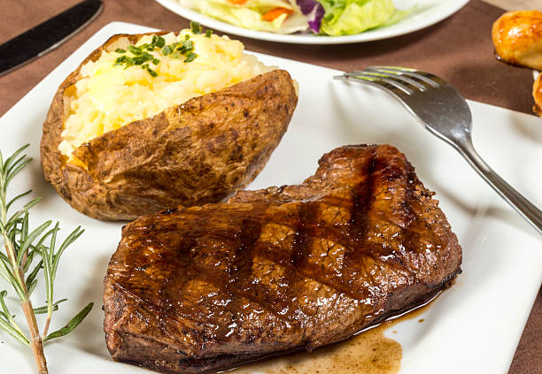

Steak and Potatoes (cubed)
Home

Description
Steak and potatoes is a classic favorite among many Americans.
This simple dish made up of, you gusessed it... steak and potatoes,
is timeless and relatively easy to make. Often paired with steamed broccoli
or Asparagus, this dish will leave you satisfied and full. This is a variation
where the steak and potatoes are cubed.
Ingredients
- 1 tablespoon olive oil
- 4 tablespoons unsalted butter divided
- 1 pound Yukon Gold Potatoes diced into ½-inch cubes
- 4 cloves garlic minced
- 1 teaspoon dried rosemary
- 1 teaspoon dried oregano
- ½ teaspoon kosher salt
- ½ teaspoon ground pepper
- 2 8oz steak filets
- Freshly chopped parsley optional, for garnish
Steps
-
Heat a cast iron skillet over medium-high heat. Add the olive oil and
two tablespoons of the butter. Let the butter melt completely
-
Add the cut potatoes, garlic, rosemary, oregano salt, and pepper.
Cook for approximately 4 minutes without disturbing. Stir and cook
an additional 3-4 minutes, or until fork tender. Remove the potatoes
from the pan and set aside in a bowl.
-
Return the skillet to the stove and increase the heat to high.
Add 2 tablespoons of butter and stir to melt. Add the steak bites in a single
layer and cook for one minute. Flip or stir the steak for another 1-2 minutes,
or until desired doneness. Remove the skillet from the heat.
-
Add the cooked potatoes back to the skillet and toss together.
Add additional salt and pepper if desired.
-
Top with fresh chopped parsley (optional). Serve and enjoy!